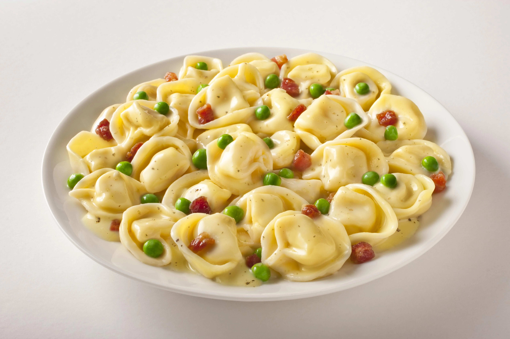
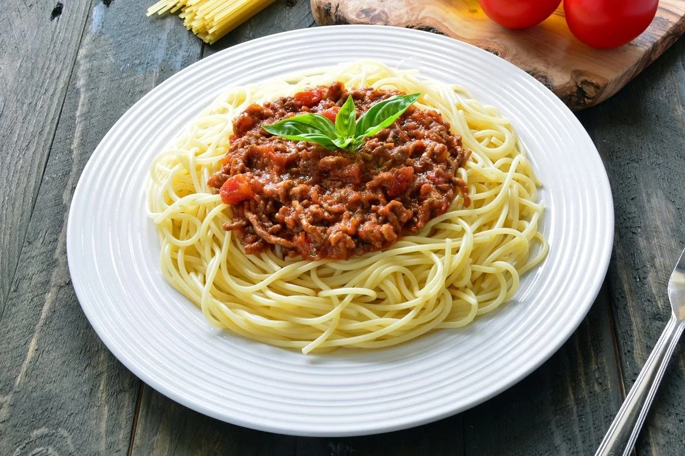
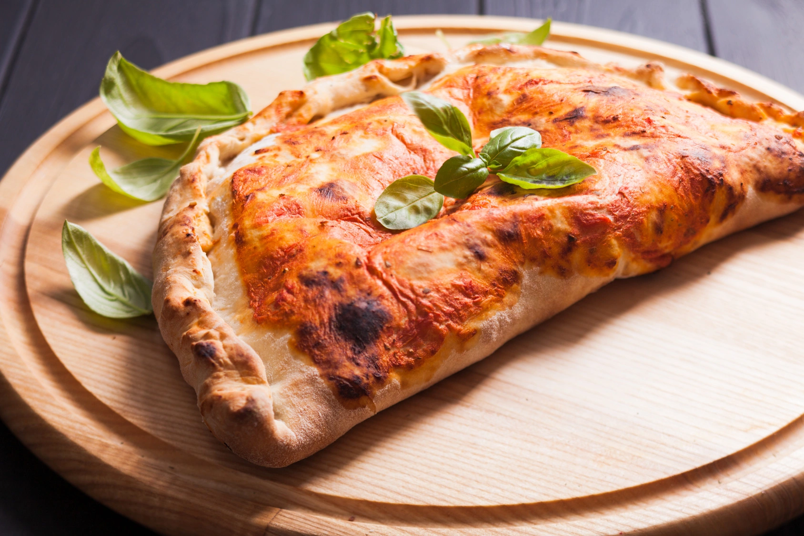

Традиционная кухня Италии, распространённая и популярная во всём мире, благодаря таким блюдам, как пицца и спагетти. Она очень разнообразная и региональная. в каждом регионе есть свои традиционные блюда. В основе итальянской кухни лежат исторически сложившиеся многовековые традиции с культурными влияниями римлян, греков, лангобардов, арабов и прочих народов, когда-либо населявших Италию или оказывавших влияние на формирование её культуры.
 Тортеллини (Tortellini) — итальянские пельмени из пресного теста с мясом, сыром или овощами. Историческая родина тортеллини — регион Эмилия, однако сейчас эту разновидность макаронных изделий готовят по всей Италии. По своей форме тортеллини напоминают маленькие пельмени, уголки которых соединяют, чтобы получилось кольцо или бутончик.
Русский эквивалент: Пельмени - это блюдо, изготавливаемое из пресного теста с начинкой из рубленного мяса или рыбы. Они распространены среди народов бывшего Советского союза, включая русскую, удмуртскую, коми и некоторые другие национальные кухни финно-угорских народов. Слово "пельмени" происходит из пермских языков: коми, удм. пельнянь «хлебное ухо»: пель «ухо» + нянь «хлеб». Также существуют различные способы приготовления пельменей, такие как варка в бульоне, приготовление в духовке или на пару. Кроме того, существуют рыбные пельмени, которые готовятся из пресного теста с начинкой из рыбы или морепродуктов.
 Паста болоньезе (pasta alla bolognese) — блюдо итальянского происхождения, разновидность сервировки пасты, а также используемый при такой сервировке мясной соус. Историческим типом пасты для подачи с соусом болоньезе является длинная плоская лапша тальятелле или короткие виды пасты, например, пассателли. Однако же сегодня за пределами Италии, соус болоньезе сервируется также и со спагетти или другими видами пасты.
Макароны по-флотски — блюдо из макаронных изделий с мясным фаршем: ранее отваренным, а затем обжаренным в сливочном масле, обычно с луком. Макароны по-флотски морякам полюбились, а само блюдо постепенно стало настолько распространенным в российском флоте, что даже в английском языке макароны по-флотски называются «Pasta Russian Navy Style» – «макароны в русском военно-морском стиле»!
 Кальцоне (calzone) — итальянский пирог, закрытая форма пиццы в виде полумесяца. Типичное блюдо центральных и южных регионов Италии. В этой стране он имеет и другие названия: panzerotto и panzarotto. Кальцоне может быть как горячей закуской, так и основным блюдом. В Италии её часто подают с томатным соусом, который может быть как внутри начинки, так и отдельно: для макания.
Расстегай — традиционное блюдо русской кухни, представляющее из себя пирог с «открытым верхом» - отверстием на внешней верхней стороне пирога. Основными начинками расстегая являются мясо, рыба, грибы, капуста и другие овощи, а также ягоды и травы. Верхнее отверстие расстегая используется для добавления в начинку бульона и приправ.
| Итальская кухня | |||
|---|---|---|---|
| На 100 г. | Тортеллини | Паста болоньезе | Кальцоне |
| Калорийность | 307 ккал | 171 ккал | 285 ккал |
| Белки | 14 г. | 8 г. | 7 г. |
| Жиры | 7 г. | 5 г. | 17 г. |
| Углеводы | 47 г. | 22 г. | 25 г. |